10.÷= sh 12400411.÷=sh 755002012.) sh st18442841413.) sh st19954603714.) sh st1376536215.) sh st14190076616.Daftari moja linauzwa kwa bei ya shilingi 500 na senti 30 Je, ni kiasi gani cha fedha kinahitajika kununua madaftari 8 ya aina hiyo?17.Mpira unauzwa kwa bei ya shilingi 8,000 na senti 25. Itagharimu kiasi gani cha fedha kununua mipira 4 ya aina hiyo?18.Kiasi cha shilingi 1,200 na senti 75 kilitumika kununua kalamu 3 zenye bei sawa. Je, kalamu moja iliuzwa kwa shilingi ngapi?19.Mwanafunzi alinunua madaftari 9 kwa shilingi 1809.45. Je, daftari moja liligharimu kiasi gani cha fedha ikiwa madaftari yote yalinunuliwa kwa bei sawa?20.Mshahara wa mtumishi ni shilingi 775,355 na senti 23 kwa mwezi. Ni kiasi gani cha mshahara mtumishi huyo hupokea kwa mwaka?21.Ndani ya pakiti moja kuna penseli 12. Ikiwa penseli moja inagharimu shilingi 450 na senti 25. Je, pakiti 8 za penseli za aina hiyo zitagharimu kiasi gani cha fedha?22. Mkulima aliuza magunia 98 ya mahindi. Ikiwa aliuza kila gunia kwa bei ya shilingi 98,500 na senti 45, je, alipata jumla ya kiasi gani cha fedha?